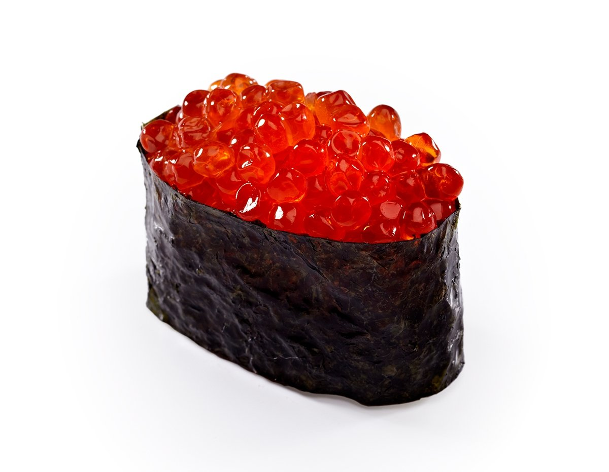

| Товар | Цена, руб. |
|---|---|
| Роллы | |
| Запеченные роллы с креветкой | 420 |
| Тори Маки ролл | 460 |
| Филадельфия хит ролл | |
| Калифорния лайт | 400 |
| Каппа маки | 220 |
| Спайс ролл с лососем | 410 |
| Суши | |
| Суши с палтусом | 380 |
| Суши с тигровой креветкой | 400 |
| Суши с кальмаром | 220 |
| Суши с икрой | 330 |
| Суши с морским окунем | 330 |
| Безалкогольные напитки | |
| Чай | 100 |
| Кофе | 120 |
| Лимонад | 180 |
| Всего 11 наименований | |
Запеченные роллы с креветкойЗапеченные роллы с креветкой под необыкновенно вкусным соусом из творожного сыра и икры мойвы – это буйство вкусов и ароматов, собранных в единое целое в одном кушанье. |
|
Тори Маки роллСостав: Курица копченая, огурец, сыр брынза, стружка тунца. |
|
Филадельфия хит роллСостав роллов «Филадельфия» прост: рис для суши, творожный сливочный сыр и тонкий ломтик красной рыбы, свежей или слабосоленой. Иногда в роллы заворачивают огурец, зелень или авокадо. |
|
 |
Калифорния лайтСостав роллов:отварной рис, морские водоросли, васаби, свежие огурцы или авокадо, мясо крабов, икра летучих рыб. |
Каппа макиРолл «Каппа Маки» станет идеальным обедом для тех, кто стремится соблюдать принципы здорового питания и отдает предпочтение низкокалорийным блюдам. Его начинка отличается своей простотой – в ней только присутствуют огурцы, которые завернуты в тонкую полоску нори. Свежий вкус огурцов отлично оттеняется рассыпчатым рисом, а семечки кунжута вносят в блюдо особое очарование. |
|
Спайс ролл с лососемВы можете выбрать любую слабосоленую красную рыбу – горбушу, кету, форель или семгу. |
|
Суши с палтусомСуши с копченым палтусом,авокадо и свежим огурцом японской кухни. |
|
Суши с тигровой креветкойСуши с тигровой креветкой, или как его еще называют сами японцы "нигири суши". Готовятся эти суши просто. Берем зеленые тигровые креветки, отвариваем их до состояния покраснения пару минут, резко охлаждаем в холодной воде, чистим оставляя хвостик, разрезаем креветку по брюху, после чего укладываем подготовленную тушку на предварительно сформированный рисовый шарик. |
|
Суши с кальмаромСостав:рис для суши, нори, кальмары, майонез. |
|
|  |
Суши с икройЭто — вкуснейшие роллы с красной икрой, крабовыми палочками и сыром "Филадельфия" |
Суши с морским окунемРис с морским окунем-прекрасное сочетание. |